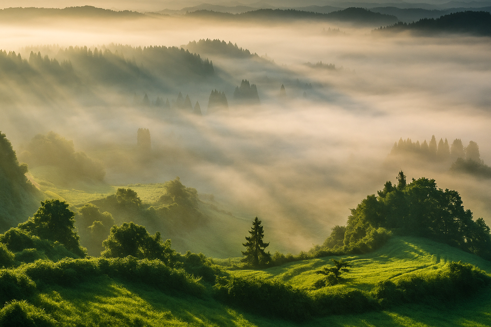
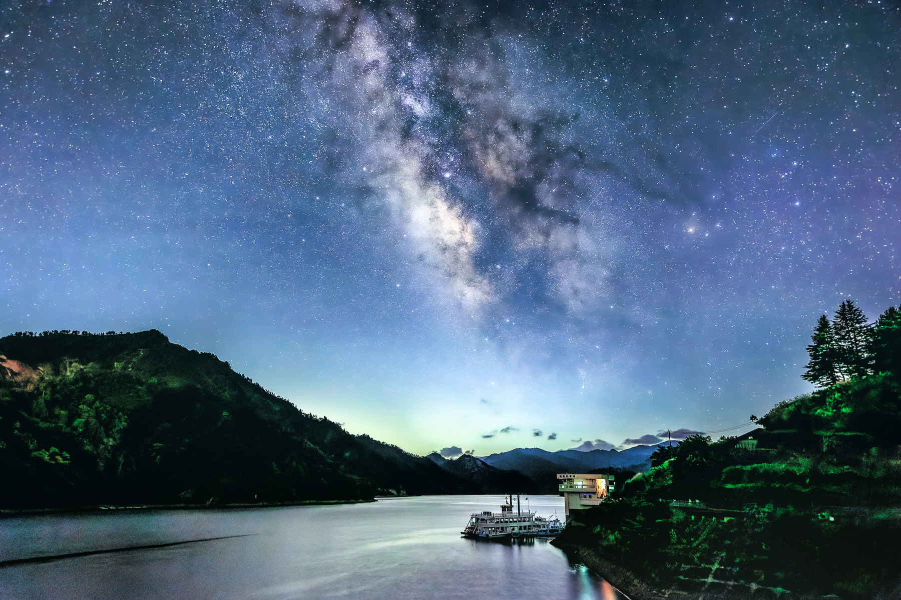
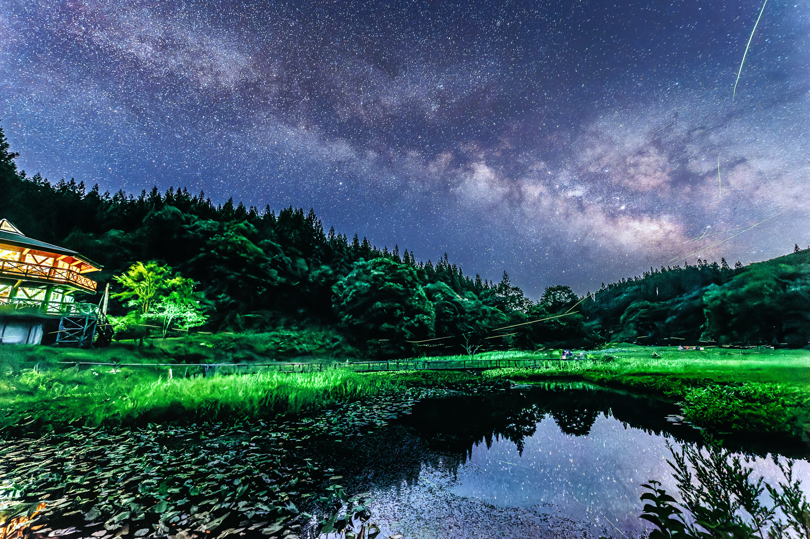
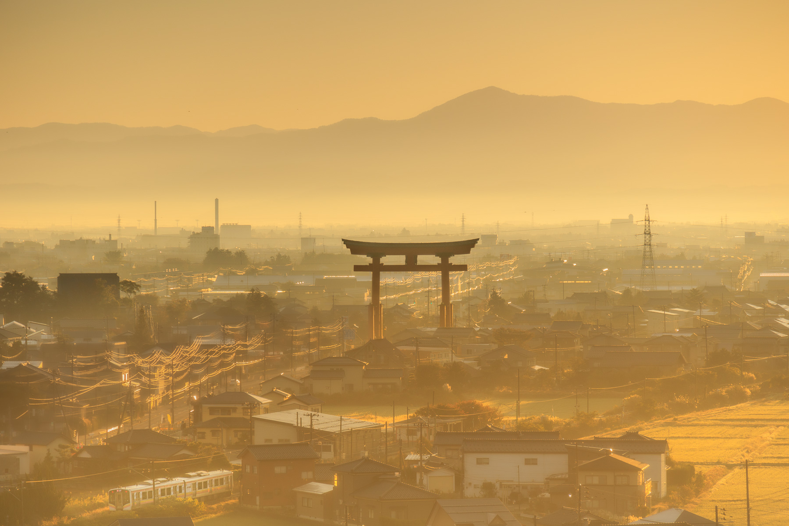
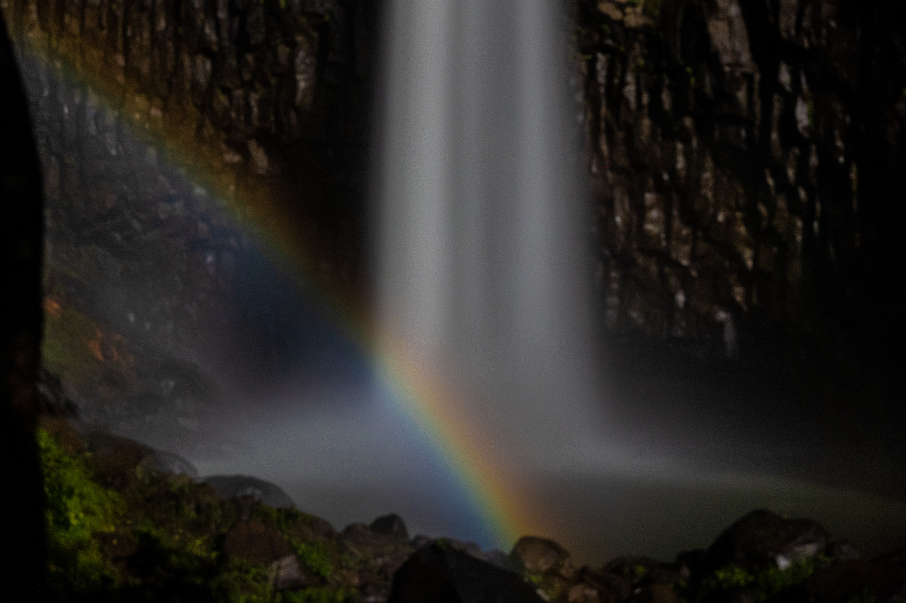
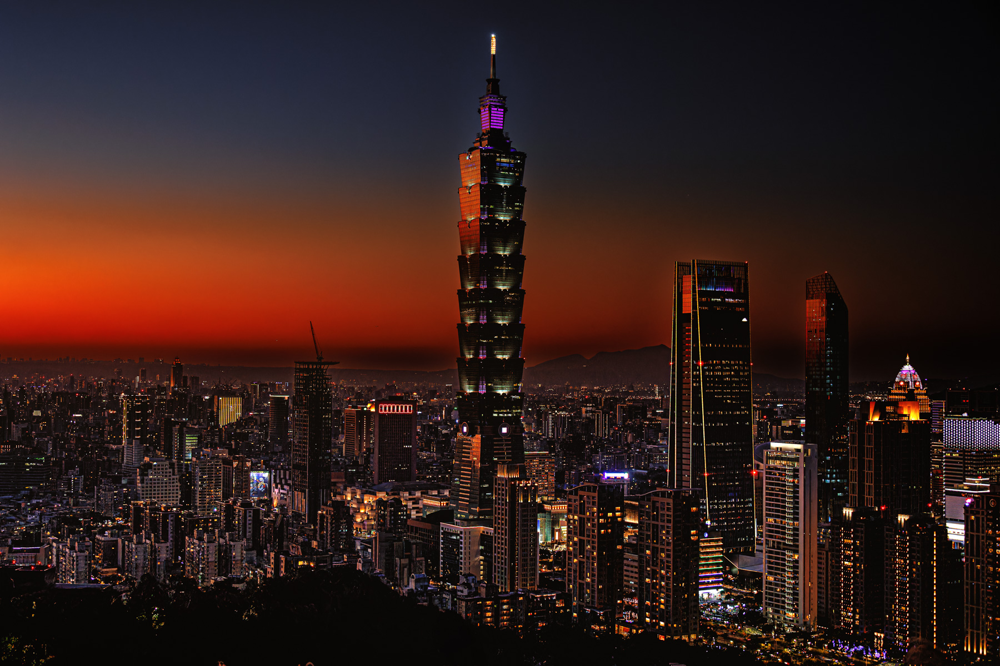

Gallery
Selected works will be added here, including landscapes, night skies, Milky Way scenes, and award-winning photographs from Japan and Taiwan.

Sea of Morning Mist

Milky Way over Okutadami Lake" onclick="openLightbox(this.src, this.alt)">Milky Way over Okutadami Lake

Summer Night Collaboration

Gate Above the Morning Haze

Rainbow Beneath the Falls

Taipei at Dusk
About
Landscape and nightscape photographer based in Niigata, Japan.
Capturing moments shaped by light, weather, and time.
Awards
Awards
International
TIFA Bronze Winner
BIFA Award Winner
Japan
Nika Exhibition Selected
Niigata City Mayor Award
Nagaoka City Mayor Award
Niigata Prefectural Art Exhibition Selected
Niigata Nippo Photo Contest – Outstanding Award (Two Consecutive Years)
International
• TIFA Bronze Winner
• BIFA Award Winner
Japan
• Nika Exhibition Selected
• Niigata City Mayor Award
• Nagaoka City Mayor Award
• Niigata Nippo Photo Contest
Outstanding Award (2022, 2023)
Contact
Instagram
@ko_photo
Email
yourmail@example.com